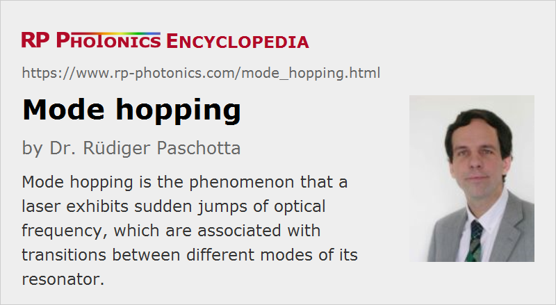

Mode Hopping
Definition: the phenomenon that a laser exhibits sudden jumps of optical frequency, which are associated with transitions between different modes of its resonator
German: Modensprünge
Categories: optical resonators, lasers
How to cite the article; suggest additional literature
Author: Dr. Rüdiger Paschotta
Mode hopping is a phenomenon which is mostly discussed in the context of single-frequency lasers. Under some external influence, such a laser may operate on a single resonator mode for some time, but then suddenly switch to some other mode. This means that this other mode suddenly takes over all the optical power; for a short while, there may be power in both modes.
In multimode operation of a laser, there may also be transitions between different sets of modes. However, simultaneous oscillation on many modes is then most common, and instead of complete mode hops there are often more continuous transitions, with the optical power being gradually redistributed. The dynamics can be further influenced by nonlinear effects such as spatial hole burning.
Mode hops can also involve higher-order modes, or modes with different polarization in lasers with polarization-independent gain.
Causes of Mode Hops
Mode hops are often provoked by external influences. For example, a drift of the temperature of the gain medium will shift the wavelength of maximum gain while not shifting the frequencies of the resonator modes to the same extent. (This can happen e.g. in laser diodes, where temperature changes usually affect the gain maximum more than the cavity resonances.) The previously lasing mode may then no longer be the mode with highest gain, so that the power of a competing mode with higher gain can quickly rise.
Essentially the same phenomenon can occur for length drifts of the laser resonator, which shift the resonator mode frequencies without also shifting the gain maximum.
Both origins of mode hops often result from attempts to tune the wavelength of a laser. The external influences can of course also be just random noise, e.g. mirror vibrations, temperature fluctuations or changes of pump power, or external optical feedback.
Consequences of Mode Hops
Mode hops can obviously be disturbing, because they can make it difficult e.g. to obtain continuous wavelength tuning. Depending on various details of a laser setup, the wavelength may make significant jumps with only small changes in between these jumps, or it can vary like a sawtooth curve.
Mode hops also generate laser noise, e.g. in the form of intensity noise and noise of other parameters, particularly if the mode hops occur frequently.
Avoiding Mode Hopping
It is generally easier to avoid mode hopping when the laser resonator has a large free spectral range, i.e. a large frequency spacing of its fundamental modes. Some tunable lasers are just equipped with a correspondingly short laser resonator, and the tuning range is limited by a value close to the free spectral range, which may e.g. be a few gigahertz for a compact nonplanar ring oscillator (NPRO or MISER).
A continuous (mode hop free) tuning range much wider than the free spectral range is possible by coordinated tuning of the resonator mode frequencies and the gain maximum, or with an additional intracavity optical filter.
Random mode hops may be suppressed by minimizing external noise influences (e.g. by temperature stabilization) and also by using a resonator with large free spectral range (see above).
It is also possible to employ various kinds of nonlinearities which favor the already lasing mode over competing modes. An example is spatial hole burning in an unpumped region of a quasi-three-level gain medium [3]. A similar effect can be achieved with intracavity frequency doubling [2].
Questions and Comments from Users
Here you can submit questions and comments. As far as they get accepted by the author, they will appear above this paragraph together with the author’s answer. The author will decide on acceptance based on certain criteria. Essentially, the issue must be of sufficiently broad interest.
Please do not enter personal data here; we would otherwise delete it soon. (See also our privacy declaration.) If you wish to receive personal feedback or consultancy from the author, please contact him e.g. via e-mail.
By submitting the information, you give your consent to the potential publication of your inputs on our website according to our rules. (If you later retract your consent, we will delete those inputs.) As your inputs are first reviewed by the author, they may be published with some delay.
Bibliography
| [1] | G. A. Ball and W. W. Morey, “Continuously tunable single-mode erbium fiber laser”, Opt. Lett. 17 (6), 420 (1992), doi:10.1364/OL.17.000420 |
| [2] | K. I. Martin et al., “Self-suppression of axial mode hopping by intracavity second-harmonic generation”, Opt. Lett. 22 (6), 375 (1997), doi:10.1364/OL.22.000375 |
| [3] | R. Paschotta et al., “Single-frequency ytterbium-doped fiber laser stabilized by spatial hole burning”, Opt. Lett. 22 (1), 40 (1997), doi:10.1364/OL.22.000040 |
| [4] | C. Petridis et al., “Mode-hop-free tuning over 80 GHz of an extended cavity diode laser without antireflection coating”, Rev. Sci. Instrum. 72 (10), 3812 (2001), doi:10.1063/1.1405783 |
See also: resonator modes, single-frequency lasers, wavelength tuning, laser resonators, laser noise
and other articles in the categories optical resonators, lasers
|  |
If you like this page, please share the link with your friends and colleagues, e.g. via social media:
These sharing buttons are implemented in a privacy-friendly way!